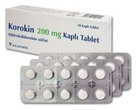

Korokin 200 mg Film Kaplı Tablet, 30 Adet

Ne için kullanılır
KT · Bölüm 1KOROKİN tablet ağızdan alınır. İlacınızın bir kutusu içinde her biri 200 mg hidroksiklorokin sülfat içeren 30 adet film kaplı tablet bulunur.
Doktorunuz, KOROKİN’i aşağıdaki durumların herhangi birinin tedavisi amacıyla reçete etmiştir: • Romatoid artrit (eklemlerde ağrı ve şekil bozukluğuna neden olan devamlı bir hastalık) • Diskoid ve sistemik lupus eritematozus (tüm vücutta veya ciltte pullanmayla kendini gösteren bir hastalık, sistemik olduğunda ateş, güçsüzlük, eklem ağrıları gibi belirtileri
vardır.) • Güneş ışığına duyarlı cilt problemleri
Çocuklarda: -Juvenil idiyopatik artrit (diğer tedavilerle kombine halinde) -Diskoid ve sistemik lupus eritematozus (tüm vücutta veya ciltte pullanmayla kendini gösteren bir hastalık, sistemik olduğunda ateş, güçsüzlük, eklem ağrıları gibi belirtileri vardır.)